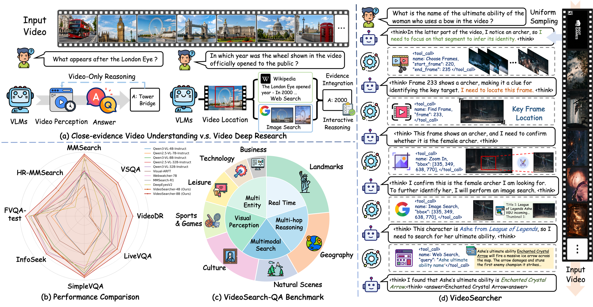
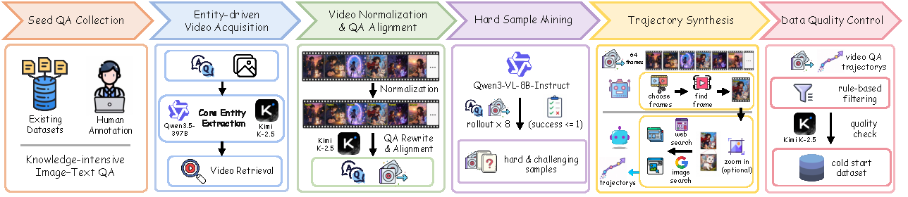
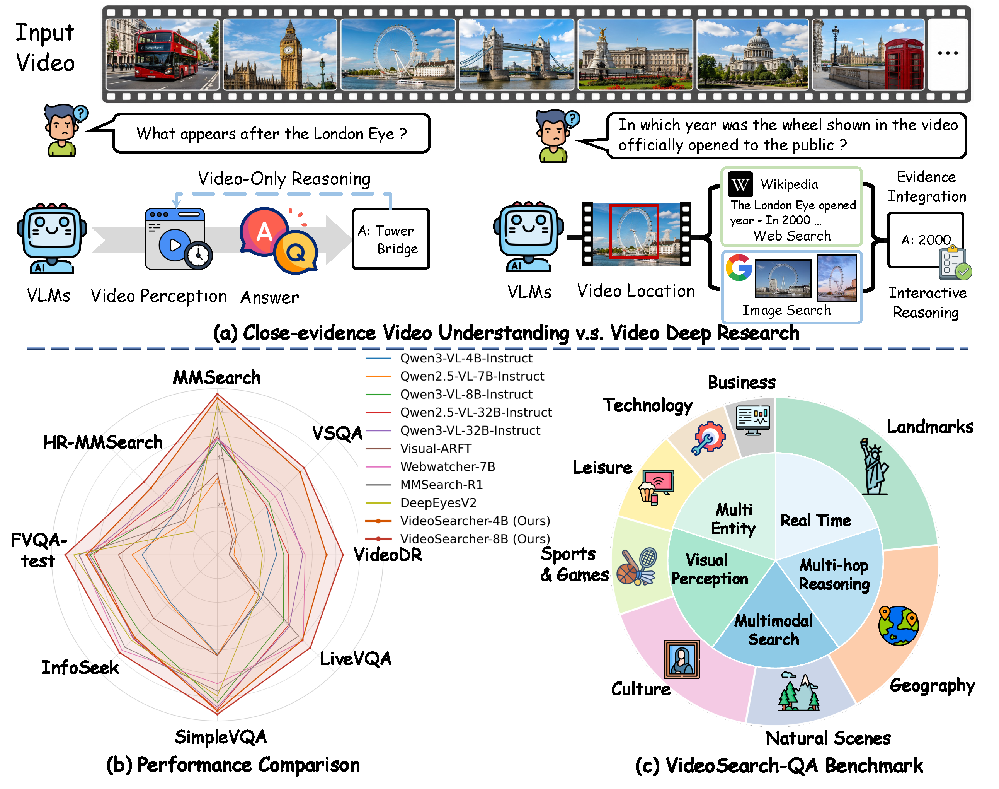
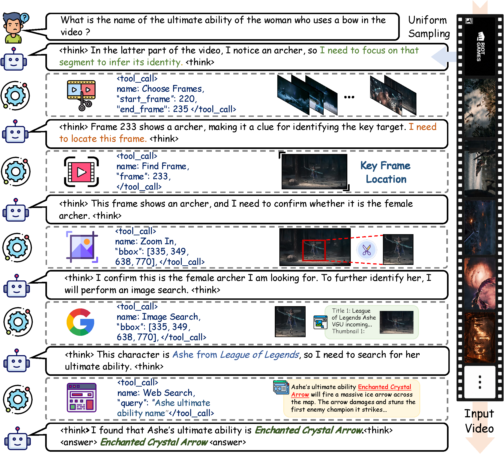
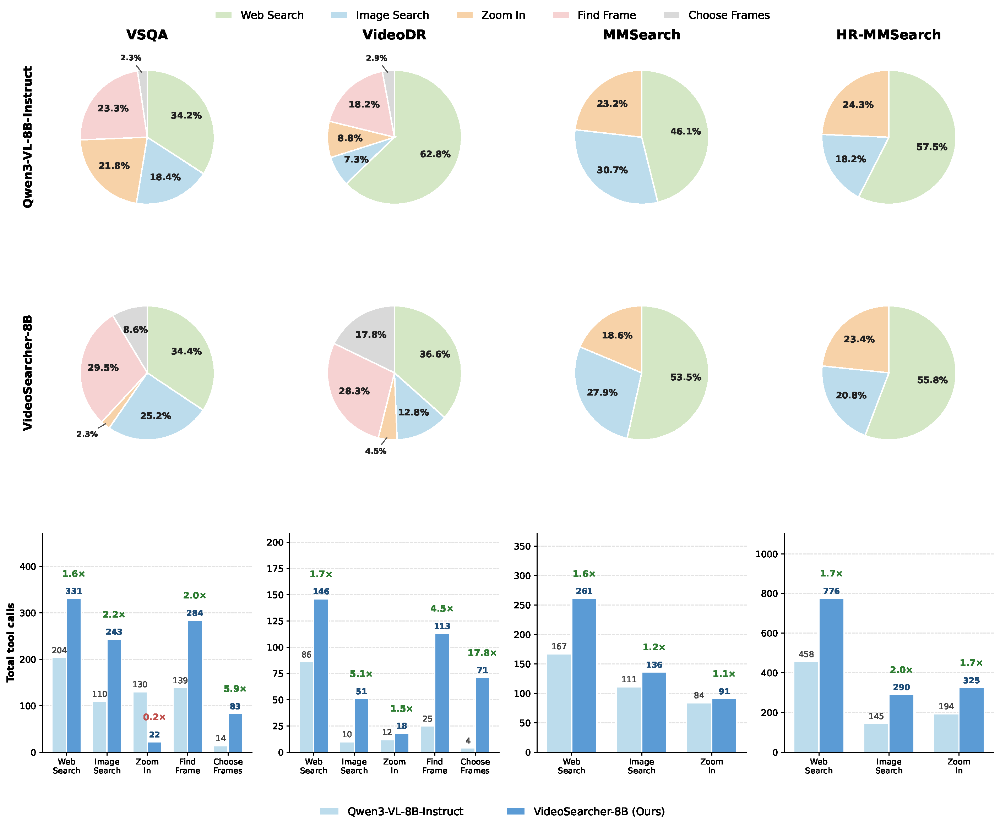
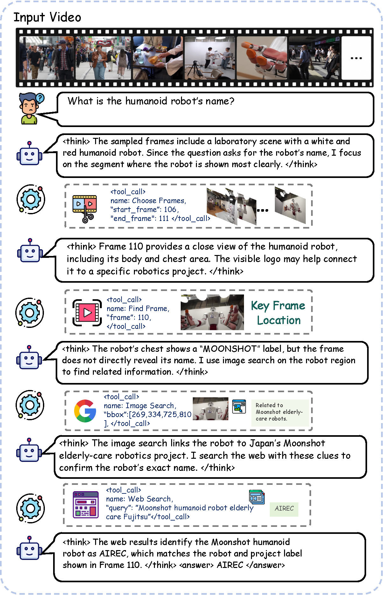
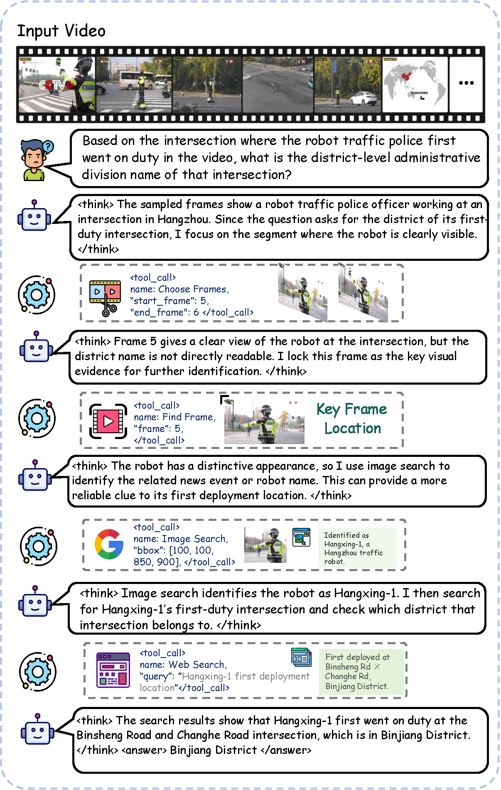
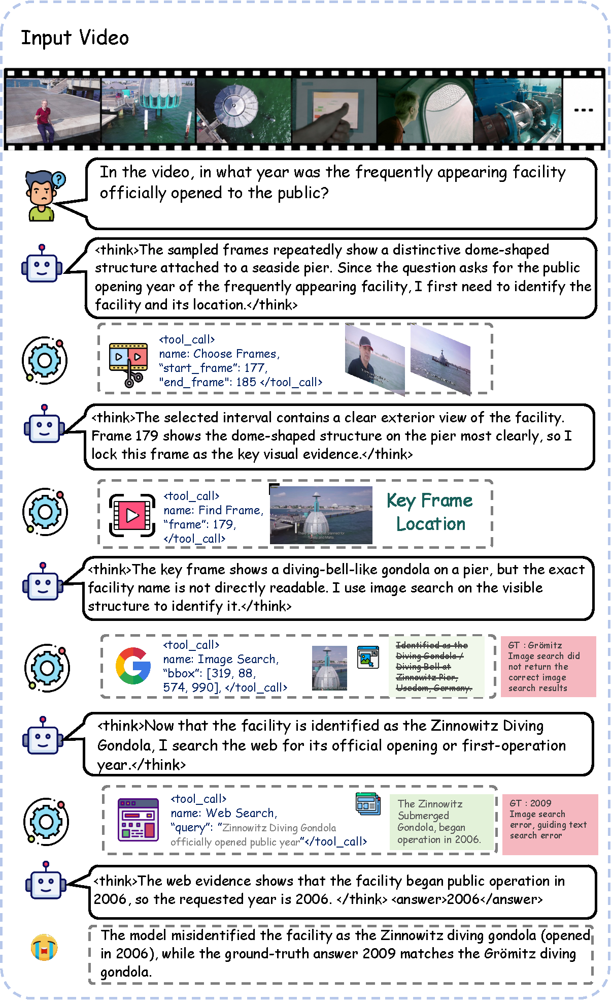

Video Grounding
The agent narrows long videos to relevant segments and locks key frames before searching for external evidence.

EMNLP 2026 · Main Conference
* Equal Contribution, † Project Leader, ✉ Corresponding Author
1East China Normal University, 2Tencent Youtu Lab, 3HFIPS, Chinese Academy of Sciences, 4Wuhan University, 5Xiamen University, 6The Hong Kong University of Science and Technology

VideoSearcher studies Video Deep Research, where an agent must localize visual evidence in videos, invoke external search tools, and synthesize answers through a single coherent reasoning trajectory.
A full VideoSearcher rollout: the agent localizes key frames in the video, zooms into the visual clue, launches image and web search, and integrates the retrieved evidence into a final answer.
Video understanding is moving beyond closed-context perception toward open-world evidence exploration, a paradigm formalized as Video Deep Research (VDR). Existing multimodal search agents primarily target static images, and current VDR benchmarks rely on text-centric retrieval that discards crucial visual information. We propose VideoSearcher, a closed-loop agentic framework that empowers Vision-Language Models with multi-tool reasoning for VDR. VideoSearcher unifies temporal localization, spatial focusing, and multimodal search within a single reasoning trajectory, enabling agents to progressively ground visual clues, retrieve relevant evidence, and synthesize answers.
To optimize knowledge-intensive reasoning trajectories, we introduce Bi-branch Sequence Policy Optimization (BiSPO), which decouples tool-invocation optimization from answer-accuracy optimization. We further construct VideoSearch-QA, a benchmark for open-world video information grounding and multimodal search-based reasoning. Experiments show that VideoSearcher substantially improves over prior open-source agentic baselines across search-oriented and multimodal understanding benchmarks.

The agent narrows long videos to relevant segments and locks key frames before searching for external evidence.
Image search and web search connect localized visual clues with open-world knowledge.
Answer correctness and tool-use behavior are optimized through separated reward branches.
VideoSearcher-8B reaches an average score of 57.66% across 8 search-oriented benchmarks, outperforming the Qwen3-VL-8B agentic baseline by 15.71% on average.



Qualitative examples illustrate how VideoSearcher builds a trajectory from video localization to visual entity search, evidence retrieval, and final answer synthesis.



@inproceedings{gao2026videosearcher,
title = {VideoSearcher: Empowering Video Deep Research with Multi-Tool Agentic Reasoning via Reinforcement Learning},
author = {Gao, Zhenkun and Bao, Yicheng and Peng, Jinlong and Li, Xueheng and Huang, Suyuan and Liu, Bangwei and Li, Kunquan and Gan, Zhenye and Hu, Tao and Xie, Chengjun and Yang, Mingqian and He, Xuanhua and Zhang, Zhizhong and Tan, Xin and Wang, Chengjie and Xie, Yuan},
booktitle = {Proceedings of the 2026 Conference on Empirical Methods in Natural Language Processing (EMNLP)},
year = {2026},
eprint = {2607.02927},
archivePrefix = {arXiv}
}